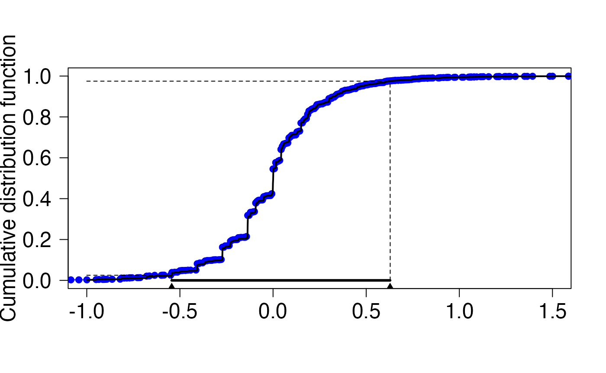
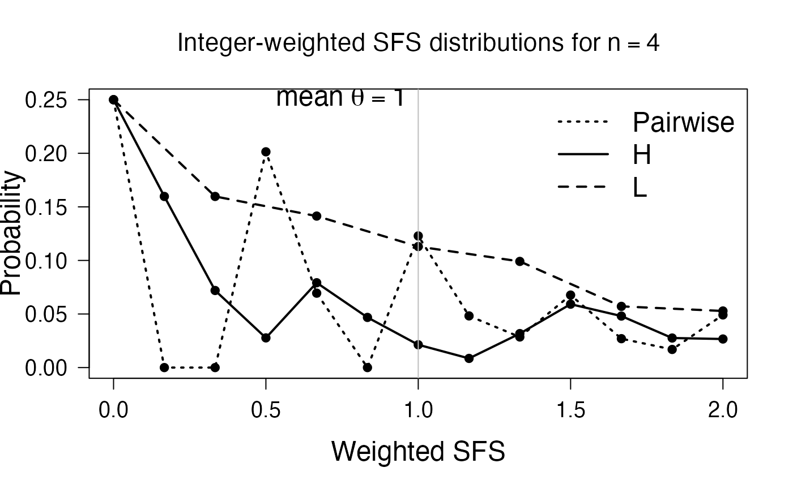

Using PhaseTypeR for the site frequency spectrum
Source:vignettes/a3_phasetypeR_SFS.Rmd
a3_phasetypeR_SFS.RmdIn this vignette, we recreate the figures from the paper by Asger Hobolth, Mogens Bladt and Lars Nørvang Andersen entitled “Multivariate phase-type theory for the site frequency spectrum” (https://arxiv.org/abs/2101.04941). This vignette is only intended to illustrate how to reproduce the figures of the article. If you are looking for a more in-depth explanation on how to use the package for population genetics, please visit this vignette instead.
For reproducibility of the simulations below, we first fix the seed of the random generator. We then load the package and auxiliary functions, which we will need below. The auxiliary functions are included at the end of this vignette, and they can be copy-pasted into a source file if needed.
## You can install the dependencies for this vignette by running the following:
# install.packages('expm')
# install.packages('partitions')
set.seed(0)
library(PhaseTypeR)
library(expm)
# source('auxiliary_functions.R')Figure 1
Consider first, the left figure of Figure 1. This figure displays the coefficients of the site frequency spectrum for different unbiased estimators of the mutation rate \(\theta\). The coefficients of the H, L, Watterson’s, pairwise and singleton estimators are given Section 1.1 of Hobolth (2021). The coefficients of the BLUE estimator are given by \[\begin{eqnarray} \hat{\mathbf{c}}= \frac{\mathbf{\Lambda}^{-1}\mathbf{v}}{\mathbf{v}^{\ast}\;\mathbf{\Lambda}^{-1}\mathbf{v}}. \end{eqnarray}\] where \(\mathbf{v}= (1,1/2,\dots,1/(n-1))^\ast\) and \(\mathbf{\Lambda}\) is the covariance matrix of the site frequency spectrum, which, as described in Section 5 in Hobolth (2021) can be calculated in terms of the mean \(\mathbf{\mu}\) and covariance matrix \(\mathbf{\Sigma}\) of the underlying block counting process \[\begin{align} \mathbf{\Lambda}= \mbox{Var}\mathbf{Z}= \left(\frac{\theta}{2}\right)^2 \mathbf{\Sigma}+ \frac{\theta}{2} \mbox{diag}(\mathbf{\mu}) \end{align}\]
The latter two are easily calculated numerically using the package.
n = 10
# Generate the block counting process for n = 10 as a
# phase-type distribution. The resulting object will be of class
# "mult_cont_phase_type" with subintensity matrix "subint_mat"
# and state space/reward matrix "reward_mat".
ph_bcp <- block_counting_process(n)
bmu <- mean(ph_bcp) #bmu = bold mu
bSigma <- var(ph_bcp) #bSigma = bold SigmaUsing these two quantities, the coefficients are calculated below.
thetaVec <- c(0.1,1,5,10,100) #Vector theta values for Figure 1
bv <- 1/(1:(n-1)) #The vector bold v defined above
##BLUE Estimators
coef_matrix = matrix(0,length(thetaVec),n-1)
for(i in 1:length(thetaVec)) {
theta = thetaVec[i]
bLambda=(theta/2)^2*bSigma + (theta/2)*diag( bmu )
coef_matrix[i,]=solve(bLambda)%*%bv/c(bv%*%solve(bLambda)%*%bv)
}
## Watterson's estimator
xWatt <- rep(1,length(bv))/sum(bv)
##-------------------------------------------------------------
## Singleton estimator
xsngltns <- c(1,rep(0,(length(bv)-1)))
##-------------------------------------------------------------
## Pairwise difference estimator
xpair <- ( 1:(n-1) )*( (n-1):1 )/n/(n-1)*2
##-------------------------------------------------------------
## H estimator
xH <- ( 1:(n-1) )^2 *2/n/(n-1)
##-------------------------------------------------------------
## L estimator
xL <- ( 1:(n-1) )/(n-1)
##---------------------------------------------------------------
## Plot the coefficients of the 5 different estimators (W,S,P,H,L)
plot(1:(n-1),xWatt,ylim=c(-0.5,2),col="black",lwd=2,type="l",xlim=c(1,n),
xlab=bquote(i),ylab=bquote(c[i]),cex.lab=1.5,lty=2,las=1,cex.axis=1.5)
abline(v=1:9,col="gray")
points(1:(n-1),xsngltns,col="black",type="l",lty=3,lwd=2)
points(1:(n-1),xpair,col="black",type="l",lty=4,lwd=2)
points(1:(n-1),xH,col="black",type="l",lty=5,lwd=2)
points(1:(n-1),xL,col="black",type="l",lty=6,lwd=2)
for (i in 1:length(thetaVec)){
xhat = coef_matrix[i,]
points(1:(n-1),xhat,type="l",lwd=2)
text(n-1,xhat[n-1],bquote(theta==.(thetaVec[i])),pos=4,cex=1.0)
}
txtVec <- c("Watterson","Singleton","Pairwise","H","L","BLUE")
ltyVec <- c(2,3,4,5,6,1)
indx <- c(4,5,1,3,2,6)
legend(2,2,txtVec[indx],lty=ltyVec[indx],lwd=2,bty="n",cex=1.2)
The right figure in Figure 1 displays the variances as a function of \(\theta\) - these can be calculated as \(\mathbf{c}^\ast \mathbf{\Lambda}\mathbf{c}= \mathbf{c}^\ast \mathbf{\Lambda}(\theta) \mathbf{c}\), where \(\mathbf{c}\) are the coefficients calculated above, and \(\mathbf{\Lambda}(\theta)\) is the covariance of the site frequency spectrum as above.
thetaVec <- seq(0.01,2.5,by=0.1)
ntheta <- length(thetaVec)
vrW <- rep(0,ntheta) ; vrS <- rep(0,ntheta) ; vrP <- rep(0,ntheta)
vrH <- rep(0,ntheta) ; vrL <- rep(0,ntheta) ; vrMVUE <- rep(0,ntheta)
for (i in 1:ntheta){
tht <- thetaVec[i]
bLambda=(tht^2/4)*bSigma + (tht/2)*diag( bmu )
xhat <- (solve(bLambda) %*% bv)/as.numeric(bv %*% solve(bLambda) %*% bv)
vrMVUE[i] <- t(xhat) %*% bLambda %*% xhat
vrW[i] <- t(xWatt) %*% bLambda %*% xWatt
vrS[i] <- t(xsngltns) %*% bLambda %*% xsngltns
vrP[i] <- t(xpair) %*% bLambda %*% xpair
vrH[i] <- t(xH) %*% bLambda %*% xH
vrL[i] <- t(xL) %*% bLambda %*% xL
}
plot(thetaVec,vrMVUE,type="l",lty=1,lwd=2,xlim=c(0,max(thetaVec)),
xlab=bquote(theta),ylab="Variance for estimator",cex.lab=1.5,las=1,cex.axis=1.5)
points(thetaVec,vrW,type="l",lty=2,lwd=2)
points(thetaVec,vrS,type="l",lty=3,lwd=2)
points(thetaVec,vrP,type="l",lty=4,lwd=2)
points(thetaVec,vrH,type="l",lty=5,lwd=2)
points(thetaVec,vrL,type="l",lty=6,lwd=2)
indx <- c(4,5,2,3,1,6)
legend("topleft",txtVec[indx],lty=ltyVec[indx],lwd=2,bty="n",cex=1.2)
Figure 2
Here, we numerically invert the characteristic function of the numerator of Tajima’s \(D\) and compare to simulated values. First, we obtain the rate-matrix and state space for the block counting process. First, we simulate using Theorem 3.1 in Asger (2021), from which it follows that the site frequency spectrum can be simulated by first sampling a random variate from the appropriate block counting process, and letting the entries of this variate be the rates of independent Poisson random variables. First, we obtain the block counting process for \(n=4\)
n <- 4
# create rate-matrix and state space for block counting process
ph_bcp <- block_counting_process(n)
# Obtain sub-intensity matrix
subintensity_matrix <- ph_bcp$subint_mat
rew_mat <- ph_bcp$reward_matNext, we simulate random site frequency spectra.
R <- 1e4
ph_mv_sim_obj <- t(rMPH(R,ph_bcp))
lambda <- 0.5 #lambda = theta/2
ph_counts = matrix(0,dim(ph_mv_sim_obj)[2],dim(ph_mv_sim_obj)[1])
for(i in 1:R) {
ph_counts[i,] = rpois(n-1,lambda*ph_mv_sim_obj[,i])
}The numerator of Tajima’s \(D\) is \(\hat{\theta}_{\pi}-\hat{\theta}_{\rm W}\), so the coefficient vector \(\mathbf{c} (c_i)\) is given by
\[ c_i = \frac{1}{\binom{n}{2}} i (n-i) - \frac{1}{\sum_{i=1}^{n-1} \frac{1}{i}} \, , \]
which is implemented below:
bc = (2*((1:(n-1))*( (n-1):1))/(n*(n-1)) - 1/sum(1/(1:(n-1))))For numeric reasons, we scale the coefficients by 1000 and re-scale later
res <- 1000
bc <- res*bcAccording to equation (48) and (49) of Hobolth (2021), the characteristic function is obtained as
\[ \phi(t) = G(\mathrm{e}^{\mathrm{i}t}) \] where \[\begin{align*} G(z) = \mbox{Exp}[z^{\mathbf{c}^\ast \mathbf{xi}}] = \mbox{Exp}[z^{c_1 \xi_1} z^{c_2 \xi_2} \dots z^{c_{n-1} \xi_{n-1}}] = \mathbf{e}_1^\ast \left( \lambda \Delta[\mathbf{A}(z^\mathbf{c}- \mathbf{e})] +\mathbf{T}\right)^{-1} \mathbf{T}\mathbf{e} = \mathbf{e}_1^\ast \left( \mathbf{S}+ \lambda \Delta[\mathbf{A}(z^\mathbf{c}] \right)^{-1} \mathbf{T}\mathbf{e} \end{align*}\] where \(\mathbf{T},\mathbf{A}\) being respectively the sub-intensity matrix and reward matrix of the block counting process, \(\mathbf{e}= (1,1,\dots,1)^\ast\) and \(\mathbf{S}= \mathbf{T}- \lambda \Delta \mathbf{A}\mathbf{e}\).
The next snippet implements the \(\phi\)-function
themean <- sum(mean(ph_bcp)*bc) #the mean of the linear combination (should be 0)
bT <- subintensity_matrix #bold T
bA <- rew_mat #bold A
bS <- bT - lambda*diag(rowSums(bA)) #bold S
be <- matrix(1,dim(bT)[1],1) #be = (1,1,...,1)^T
beone <- matrix(0,1,dim(bT)[1]);beone[1]=1 #(1,0,...,0)
phi <- function(t) (exp(-1i*themean*t))*beone%*%solve(bS+lambda*diag(c(bA%*%(exp(1i*t)^bc))) )%*%bT%*%beFinally, we approximate the CDF and re-scale
appvals <- ApproxCDF(phi,H = 1e5,eta=0.0001,xlim=c(-0.5*res,1.5*res),smoothe=TRUE)
xvals <- appvals[[1]]
yvals <- appvals[[2]]
#rescale
bc2 <- (1/res)*bc
xvals2 <- (1/res)*xvals
themean2 <- (1/res)*themean
centered_sim2 <- ph_counts%*%bc2-c(themean2)
ecdfobj2 <- ecdf(centered_sim2)
plot(xvals2,yvals,type="l",ylim=c(0,1),xlim=c(-1,1.5),xlab="",las=1,ylab="Cumulative distribution function",cex.axis=1.5,cex.lab=1.5)
lines(ecdfobj2,col="blue",col.01line = NULL)
lines(xvals2,yvals,lwd=2)
segments(-1.25, 0.025, x1 = xvals2[min(which(0.025<yvals))], y1 = 0.025,lty = 2)
segments(xvals2[min(which(0.025<yvals))], -1, x1 = xvals2[min(which(0.025<yvals))], y1 = 0.025,lty = 2)
segments(-1.25, 0.975, x1 = xvals2[max(which(0.975>yvals))], y1 = 0.975,lty = 2)
segments(xvals2[min(which(0.975<yvals))], -1, x1 = xvals2[max(which(0.975>yvals))], y1 = 0.975,lty = 2)
segments(xvals2[min(which(0.025<yvals))], 0, x1 = xvals2[max(which(0.975>yvals))], y1 = 0,lwd = 3)
points(xvals2[min(which(0.025<yvals))],-0.035,pch=17)
points(xvals2[max(which(0.975>yvals))],-0.035,pch=17)
Next, we run the above code with \(n=8\).

Figure 5
In this section we recreate the bottom two sub-figures of Figure 4, and first we consider the bottom left figure, which displays the CDFs of the \(i\)-ton branch-length for \(i = 1,2,3,4\). As described in Section 3, these branch-lengths all have (possibly defective) \(PH\) distributions, whose sub-intensity matrix (and possible defect) can be calculated from the sub-intensity matrix and state-space of the block-counting process, so we first compute these two objects:
n <- 5
ph_bcp <- block_counting_process(n)
subintensity_matrix <- ph_bcp$subint_mat
rew_mat <- ph_bcp$reward_matThe reward matrix (which also represents the state-space of the block-counting process) is
rew_mat## [,1] [,2] [,3] [,4]
## [1,] 5 0 0 0
## [2,] 3 1 0 0
## [3,] 2 0 1 0
## [4,] 1 2 0 0
## [5,] 1 0 0 1
## [6,] 0 1 1 0As we see, the first column of the state-space matrix, \(\mathbf{r}= (5,3,2,1,1,0)^\ast\), then corresponds to the rewards which give rise to the singleton branch-lengths, which can then be generated as
ph = PH(subintensity_matrix)
ph_rew_obj <- reward_phase_type(ph, rew_mat[,1])The code below generates the phase-type distribution of the \(i\)-ton branches and their CDFs using the standard results for phase-type distributions (see e.g. Section 2.2 in Hobolth (2021))
\[ 1 - F(t) = \mbox{Prob}(\tau>t) = 1- \mathbf{e}_1 e^{\mathbf{S}t}\mathbf{e}, \] The code below plots the four distributions functions:
plot(1, type="n",xlim=c(0,4),ylim=c(0,1),
xlab="t",ylab="Cumulative distribution function",cex.lab=1.5,
main=bquote("Branch length distributions for i-tons with sample size"~n==.(n)),las=1,cex.axis=1.5,cex.main=1.4)
for(i in 1:(n-1)) {
ph_rew_obj <- reward_phase_type(ph,rew_mat[,i])
be <- matrix(1,length(ph_rew_obj$init_probs),1)
abstime <- function(u) {
1 - ph_rew_obj$init_probs%*%expm(ph_rew_obj$subint_mat*u)%*%be
}
abstime <- Vectorize(abstime)
curve(abstime,lty=i,add=TRUE,lwd=2)
}
legend("bottomright",c("singleton","doubleton","tripleton","quardrupleton"),
lty=1:4,bty="n",cex=1.6,lwd=2)
The the bottom right plot of Figure 4, we find the point probabilities of \(i\) mutations \(i=1,\dots,4\) corresponding to phase-type distributions of the bottom left figure. These are easily computed using Theorem 2.3 which in this case has the interpretation, that adding mutations to branches whose length is \(PH\)-distributed, gives a \(DPH\) distribution, whose sub-transition matrix is given by
\[\begin{equation} \mathbf{M}=\Big(\mathbf{I}-\frac{2}{\theta} \mathbf{S}\Big)^{-1}. \tag{$\spadesuit$} \end{equation}\]
where \(\mathbf{S}\) is the sub-transition matrix of the underlying phase-type distribution.
plot(1, type="n", xlim=c(0, 4), ylim=c(0, 1),las=1,xlab="Number of mutations",ylab="Probability",
main=bquote("Probability of mutations for"~theta==1),cex.lab=1.5,cex.main=1.4,cex.axis=1.5)
for(i in 1:(n-1)) {
ph_rew_obj=reward_phase_type(ph, rew_mat[,i])
bS <- ph_rew_obj$subint_mat
bM <- solve(diag(dim(bS)[1])-2*bS)
bpi <- ph_rew_obj$init_probs
be <- matrix(1,diag(dim(bS)[1],1))
bm <- be - bM%*%be
probs <- apply(matrix(0:5),1,function(i) bpi%*%(bM%^%i)%*%bm)
probs[1] <- probs[1] + ph_rew_obj$defect #note we have to take the possible defect into account
points(0:5,probs,pch=16)
lines(0:5,probs,lty=i,lwd=2)
}
legend("topright",c("singleton","doubleton","tripleton","quardrupleton"),
lty=1:4,bty="n",cex=1.5,lwd=2)
Figure 7
Figure 6 displays the point probabilities of the three integer–weighted estimators for \(\theta\) \((\hat{\theta}_{\pi}, \hat{\theta}_H)\) and \(\hat{\theta}_L\) for \(n=4\) and \(n=6\). First, we consider the left sub-figure, i.e. \(n=4\). The three estimators are all integer-weighted versions of the site frequency spectrum, i.e., of the form \(\mathbf{a}^\ast \mathbf{xi}= a_1 \xi_1 + a_2 \xi_2 + \dots + a_{n-1} \xi_{n-1}\), where the \(a_i\)s are integers. As described in Section 4 of Hobolth (2021), these estimators have a \(DPH\) distribution, whose sub-transition matrix is constructed using the entries of (\(\spadesuit\)), so we first, calculate the latter:
n <- 4
theta <- 1
ph_bcp <- block_counting_process(n)
subintensity_matrix <- ph_bcp$subint_mat
rew_mat <- ph_bcp$reward_mat
ph = PH(subintensity_matrix)
# The reward vector is the rows sums of the state space matrix
ph_rew_obj <- reward_phase_type(ph, rowSums(rew_mat))
bS <- ph_rew_obj$subint_mat
bM <- solve(diag(dim(bS)[1])-(2/theta)*bS)Next, we define the three \(\mathbf{a}\) vectors of coefficients. These are \((1,2,3)\) , \((3,4,3)\) and \((1,4,9)\) for \((\hat{\theta}_L)\),\((\hat{\theta}_{\pi})\) and \((\hat{\theta}_{H})\) respectively.
## [,1] [,2] [,3]
## [1,] 1 2 3
## [2,] 3 4 3
## [3,] 1 4 9The construction of the DPH-representation is described in Section 4 of Hobolth (2021) and is implemented in the function , which is invoked in the code-snippet below.
len <- n*(n-1)+1
probsMat <- matrix(0,3,len)
for(i_outer in 1:3) {
ba <- baMat[i_outer,] #This is the current a-vector
DPH_obj <- DPHrep(bM,ph_bcp$reward_mat,ba)
bMt <- DPH_obj[[1]]
sizes_of_blocks <- DPH_obj[[2]]
beone <- rep(0,dim(bMt)[1])
beone[sizes_of_blocks[1]] <- 1
be <- matrix(rep(1,dim(bMt)[1]))
bmt <- be - bMt%*%be
probs <- rep(0,len)
for(i in 1:len) {
probs[i] <- beone%*%(bMt%^%(i-1))%*%bmt
}
probsMat[i_outer,] <- probs
}
#Finally, plot the figures
main.txt <- bquote("Integer-weighted SFS distributions for"~n == .(n))
xs <- c(0,(1:(2*(n-1)))/(n-1))
plot(xs,probsMat[1,1:(2*(n-1)+1)],type="l",lty="dashed",pch=19,ylim=c(0,probsMat[1,1]),xlab="Weighted SFS",ylab="Probability",
main=main.txt,cex.main=1.4,cex.lab=1.5,las=1,lwd=2,cex.axis=1.20)
points(xs,probsMat[1,1:(2*(n-1)+1)],type="p",pch=19)
xs <- c(0,(1:((n*(n-1))))/(n*(n-1)/2))
points(xs,probsMat[2,],type="l",lty="dotted",lwd=2)
points(xs,probsMat[2,],type="p",pch=19)
points(xs,probsMat[3,],type="l",lty="solid",lwd=2)
points(xs,probsMat[3,],type="p",pch=19)
abline(v=1,col="gray")
txt <- bquote("mean"~theta==1)
text(1,probsMat[1,1],txt,pos=2,cex=1.5)
legend("topright",c("Pairwise","H","L"),lwd=2,
lty=c("dotted","solid","dashed"),bty="n",cex=1.5)
The figure for \(n=6\) is created in a similar fashion
n <- 6
theta <- 1
ph_bcp <- block_counting_process(n)
subintensity_matrix <- ph_bcp$subint_mat
rew_mat <- ph_bcp$reward_mat
ph <- PH(subintensity_matrix)
# The reward vector is the rows sums of the state space matrix
ph_rew_obj <- reward_phase_type(ph, rowSums(rew_mat))
bS <- ph_rew_obj$subint_mat
bM <- solve(diag(dim(bS)[1])-(2/theta)*bS)
baMat <- matrix(c(1:(n-1),(1:(n-1))*((n-1):1),(1:(n-1))^2),n-3,n-1,byrow=TRUE)
len <- n*(n-1)+1
probsMat <- matrix(0,3,len)
for(i_outer in 1:3) {
ba <- baMat[i_outer,] #This is the current a-vector
DPH_obj <- DPHrep(bM,ph_bcp$reward_mat,ba)
bMt <- DPH_obj[[1]]
sizes_of_blocks <- DPH_obj[[2]]
beone <- rep(0,dim(bMt)[1])
beone[sizes_of_blocks[1]] <- 1
be <- matrix(rep(1,dim(bMt)[1]))
bmt <- be - bMt%*%be
probs <- rep(0,len)
for(i in 1:len) {
probs[i] <- beone%*%(bMt%^%(i-1))%*%bmt
}
probsMat[i_outer,] <- probs
}
xs <- c(0,(1:(2*(n-1)))/(n-1))
main.txt <- bquote("Integer-weighted SFS distributions for"~n==.(n))
plot(xs,probsMat[1,1:(2*(n-1)+1)],type="l",lty="dashed",pch=19,ylim=c(0,probsMat[1,1]),xlab="Weighted SFS",ylab="Probability",
main=main.txt,cex.main=1.4,cex.lab=1.5,las=1,lwd=2,cex.axis=1.20)
points(xs,probsMat[1,1:(2*(n-1)+1)],type="p",pch=19)
xs <- c(0,(1:((n*(n-1))))/(n*(n-1)/2))
points(xs,probsMat[2,],type="l",lty="dotted",lwd=2)
points(xs,probsMat[2,],type="p",pch=19)
points(xs,probsMat[3,],type="l",lty="solid",lwd=2)
points(xs,probsMat[3,],type="p",pch=19)
xs <- c(0,(1:(2*(n-1)))/(n-1))
abline(v=1,col="gray")
txt <- bquote("mean"~theta==1)
text(1,probsMat[1,1],txt,pos=2,cex=1.5)
legend("topright",c("Pairwise","H","L"),lwd=2,
lty=c("dotted","solid","dashed"),bty="n",cex=1.5)
Figure 8
The last figure compares the CDF of the the BLUE estimator for \(\theta = 1\) and \(\theta = 10\) to Watterson’s estimator and the pairwise estimator. The code is given below without further comments, as it re-uses the code snippets above with minor modifications.
n <- 10
lambda <- 5
ph_bcp <- block_counting_process(n)
set.seed(0)
ph_mv_sim_obj <- t(rMPH(R,ph_bcp))
set.seed(19)
ph_counts <- matrix(0,dim(ph_mv_sim_obj)[2],dim(ph_mv_sim_obj)[1])
for(i in 1:R) {
ph_counts[i,] <- rpois(n-1,lambda*ph_mv_sim_obj[,i])
}
subintensity_matrix <- ph_bcp$subint_mat
rew_mat <- ph_bcp$reward_mat
bc <- coef_matrix[4,] #coef_matrix was generated above, its rows correspond to the entries of thetavec, fourth entry is theta = 10
res <- 1000
bc <- res*bc
#compute characteristic function
themean <- lambda*sum(mean(ph_bcp)*bc) #the mean of the linear combination
bT <- subintensity_matrix #bold T
bA <- rew_mat #bold A
bS <- bT - lambda*diag(rowSums(bA)) #bold S
be <- matrix(1,dim(bT)[1],1) #bold one = (1,1,...,1)^T
beone <- matrix(0,1,dim(bT)[1]);beone[1]=1 #(1,0,...,0)
phi <- function(t) (exp(-1i*themean*t))*beone%*%solve(bS+lambda*diag(c(bA%*%(exp(1i*t)^bc))) )%*%bT%*%be
#Invert numerically
appvals <- ApproxCDF(phi,H = 1e5,eta=0.0001,xlim=c(-10*res,10*res),smoothe=TRUE)
xvals <- appvals[[1]]
yvals <- appvals[[2]]
bc2 <- (1/res)*bc
xvals2 <- (1/res)*xvals
themean2 <- (1/res)*themean
#Compute point probabilities of Watterson's Theta for theta = 10
ph <- PH(ph_bcp$subint_mat)
watter <- reward_phase_type(ph, rowSums(ph_bcp$reward_mat))
lambda <- 5
bM <- solve( diag(dim(watter$subint_mat)[1])-(1/lambda)*watter$subint_mat)
bm <- rowSums(diag(dim(bM)[1]) - bM)
a1 <- 1/sum(1/1:(n-1)) #"normalizing" constant, in Watterson's theta
len <- 250 #number of points to include
out <- rep(0,len)
for(i in 0:(len-1)) {
out[i+1] <- ph$init_probs%*%(bM%^%i)%*%bm
}
wxt <- -10+a1*(0:(len-1)) # Possible values for Watterson's Theta
# Pairwise estimator for theta = 10
ba <- ( 1:(n-1) )*( (n-1):1 ) #Coefficients of pair-wise estimator
DPH_obj <- DPHrep(bM,ph_bcp$reward_mat,ba)
bMt <- DPH_obj[[1]]
sizes_of_blocks <- DPH_obj[[2]]
beone <- rep(0,dim(bMt)[1])
beone[sizes_of_blocks[1]] <- 1
be <- matrix(rep(1,dim(bMt)[1]))
bmt <- be - bMt%*%be
len = 1e3
# Running bMt - the bMt is pretty large, computing its matrix-powers in the naive way as above is time-consuming.
probs2 <- rep(0,len)
run_bMT <- beone
for(i in 1:len) {
probs2[i] <- run_bMT%*%bmt
run_bMT <- run_bMT%*%bMt
}
a1 <- n*(n-1)/2 #Normalizing constant of the pairwise estimator
wx <- -10+(1/a1)*(0:(len-1))
plot(xvals2,yvals,type="l",ylim=c(0,1),xlab="",ylab="Cumulative distribution function",cex.lab=1.5,las = 1,cex.axis=1.5)
lines(stepfun(wx,cumsum(c(0,probs2))),col="red",do.points=FALSE,lwd=2)
lines(xvals2,yvals,type="l",ylim=c(0,1),xlab="",ylab="",lwd=2)
lines(stepfun(wxt,cumsum(c(0,out))),col="blue",do.points=FALSE,lwd=2)
legend("bottomright",c("BLUE","Watterson","Pairwise"),
col=c("black","blue","red"),bty="n",cex=1.6,lwd=2)
Auxiliary functions
#'Numerical Approximation of characteristic function
#'
#'\code{ApproxCDF} approximates the cdf F when given a characteristic function phi of a centered random variable, using the formula found in Waller (1995) with
#'original reference to Bohman (1974). The procedure can be numerically unstable in the tails of the distribution, so
#'only the center of the approximation is returned. Some simplifying approximations explained in "Numerical inversion of Laplace transform and characteristic function"
#'are used. Note that phi should have a finite first moment.
#'
#'@param phi the characteristic function to be inverted
#'@param H A total of 2H+1 values of F are approximated. By default H of these values are returned unless an interval is provided.
#'@param eta A scaling paramter. By default equidistant points in the interval (-2*phi/eta,2*phi/(eta)) are approximated.
#'@param xlim (optional) limits on the x-axis
#'@param smoothe (optional) Should smoothing be used? If TRUE default weights of the function \code{simple_smoothe} are used. If an object of length > 1 is provided,
#'this will be passed to \code{simple_smoothe}
#'
#'@examples
#'phi <- function(t) exp(-t^2/2)
#'appvals=ApproxCDF(phi,H=1000,eta=0.5,xlim=c(-3,3))
#'plot(appvals[[1]],appvals[[2]],type="l",lwd=2)
#'lines(appvals[[1]],pnorm(appvals[[1]]),type="l",col="red")
#'
#'phi <- function(t) sqrt(2)*abs(t)*besselK(sqrt(2)*abs(t),1)
#'appvals=ApproxCDF(phi,H=10000,eta=0.1,xlim=c(-3,3))
#'plot(appvals[[1]],appvals[[2]],type="l",lwd=2)
#'lines(appvals[[1]],pt(appvals[[1]],df=2),type="l",col="red")
#'
#'@export
ApproxCDF = function(phi,H=2000,eta=0.5,xlim=NULL,smoothe=FALSE) {
z_vals = rep(0,H)
co = 1
for(n in 1:(H-1)) {
z_vals[co+1]= phi(eta*n)/(pi*1i*(n)) #start at index 2 - the first value of z is 0
co = co + 1
}
yvals_pos=0.5+(1:H)/H-Re(fft(z_vals,inverse=FALSE))
yvals_neg=0.5-(1:H)/H-Re(fft(z_vals,inverse=TRUE))
xvals_pos = 2*pi*(1:H)/(eta*H)
xvals_neg = -xvals_pos
xvals_neg = rev(xvals_neg)
yvals_neg = rev(yvals_neg)
xvals = c(xvals_neg,xvals_pos)
yvals = c(yvals_neg,yvals_pos)
if(!is.null(xlim)) {
indexes = intersect(which(xvals>xlim[1]),which(xvals<xlim[2]))
}
else {
indexes = (1:(H+1))+floor( (H-1)/2)
}
xvals = xvals[indexes]
yvals = yvals[indexes]
if(smoothe) {
if(length(smoothe)>1) {
yvals = simple_smoothe(yvals,smoothe)
}
else {
yvals = simple_smoothe(yvals)
}
}
return(list(xvals,yvals))
}
#' Simple smoothing
#'
#' \code{simple_smoothe} computes a simple moving weighted average of a input vector \code{x}. The weight vector must have an odd number of entries, and defaults to
#' \code{c(0.1,0.20,0.4,0.20,0.1)}
#'
#' @param x input to be smoothed
#' @param svec smoothing vector
#'
#'@examples
#'smoothed_yvals = simple_smoothe(yvals)
#'smoothed_yvals = simple_smoothe(yvals,c(0.2,0.6,0.2))
#'
#'@export
simple_smoothe <- function(x,svec= c(0.1,0.20,0.4,0.20,0.1)) {
if ((length(svec) %% 2) == 0) {stop("Please provide an odd number of smoothing weigths")}
out = x
offset = floor(length(svec)/2)
for(i in (1+offset):(length(x)-offset)) {
out[i] = sum(x[(i-offset):(i+offset)]*svec)
}
return(out)
}
#' Construction of DPH-representation
#'
#'
#' \code{DPHrep} computes the representation of of a integer-linear-combination of the Site Frequency as a discrete phase-type distribution.
#' The construction is described in Section 7.1 of Hobolth (2020).
#'
#' @param bM Subtransition probabilities un the underlying discrete Markov chain (cf. Figure 6).
#' @param bA Statespace of the underlying block-counting process
#' @param ba Vector of integer coeffcients
#'
#' @return List consisting of
#' bMt: The constructed matrix subtransition probabilities.
#' sizes_of_blocks: The sizes of the constructed blocks.
#'
#' @examples
#' ba = c(1,2,3)
#' ph_bcp = block_counting_process(4)
#' subintensity_matrix = ph_bcp$subint_mat
#' bA = ph_bcp$reward_mat
#' ph = PH(subintensity_matrix)
#' ph_rew_obj = reward_phase_type(ph, rowSums(rew_mat))
#' bS = ph_rew_obj$subint_mat
#' bM = solve(diag(dim(bS)[1])-(2/theta)*bS)
#' DPHrep(ba,bM)
#'
#'
#' @export
DPHrep <- function(bM,bA,ba) {
m = nrow(bA) #this is p in the paper
sizes_of_blocks = rep(0,m) #obtain the sizes of the blocks using formula XX
for(i in 1:m) {
sizes_of_blocks[i]=max(ba*(bA[i,] > 0))
}
bMt = matrix(0,sum(sizes_of_blocks),sum(sizes_of_blocks)) #bold-Mtilde
for(i in 1:m) {
for(j in 1:m) {
if(i <= j) { #off-diagonal blocks
bmvec = rep(0,sizes_of_blocks[j])
# The bottom row is calculated using formula DD
for(k in 1:sizes_of_blocks[j]) {
bmvec[sizes_of_blocks[j]-k+1]=sum(bA[j,]*(ba == k))
}
bmvec = bM[i,j]*bmvec/sum(bmvec)
cur_i = sum(sizes_of_blocks[1:i])
if(j == 1) {
cur_j = 1
}
else {
cur_j = sum(sizes_of_blocks[1:(j-1)]) + 1
}
bMt[cur_i,cur_j:(cur_j+sizes_of_blocks[j]-1)] = bmvec
}
# The diagonal-blocks are treated as a separate case
if((i == j) && sizes_of_blocks[i] > 1) {
size_of_current_block = sizes_of_blocks[i]
cur_i = sum(sizes_of_blocks[1:i]) - size_of_current_block + 1
cur_j = sum(sizes_of_blocks[1:j]) - size_of_current_block + 2
bMt[cur_i:(cur_i + size_of_current_block - 2),cur_j:(cur_j + size_of_current_block - 2)] = diag(size_of_current_block-1) #add identity-matrix of appropriate size
}
}
}
return(list(bMt,sizes_of_blocks))
}
#' Rate matrix and state space of the block counting process
#'
#'
#' \code{RateMatAndStateSpace} finds the state space and corresponding rate matrix
#' for the block counting process for a number of samples n in the
#' standard coalescent.
#'
#' @param n Number of samples
#'
#' @return List consisting of
#' RateM: Rate matrix
#' StSpM: Matrix with rows corresponding to the states
#' A state is a n-dimensional row vector (a1,...,an).
#' For example the beginning state is (n,0,...,0),
#' the next state is (n-2,1,0,...,0),
#' and the ending state is (0,...,0,1)
#'
#' @examples
#' RateMAndStateSpace(8)
#'
#'
#'
#' @export
RateMAndStateSpace <- function(n){
##----------------------------------------------------
## State space
##----------------------------------------------------
## Size of the state space (number of states)
nSt <- partitions::P(n)
## Definition of the state space
StSpM <- matrix(ncol=n,nrow=nSt)
## Set of partitions of [n]
x <- partitions::parts(n)
## Rewriting the partitions as (a1,...,an)
for (i in 1:nSt) {
st <- x[,i]
StSpM[i,] <- tabulate(x[,i],nbins=n)
}
## Reordering
StSpM <- StSpM[order(rowSums(StSpM),decreasing=TRUE),]
## Because of this ordering we can't 'go back', i.e.
## below the diagonal the entries are always zero
##----------------------------------------------------
## Intensity matrix
##----------------------------------------------------
RateM <- matrix(0,ncol=nSt,nrow=nSt)
## Following Algorithm 4.2
for (i in 1:(nSt-1)){
for (j in (i+1):nSt){
# cat(i," state i",StSpM[i,])
# cat(" ",j," state j",StSpM[j,])
cvec <- StSpM[i,]-StSpM[j,]
# cat(" cvec",cvec)
## Two branches are merged, i.e. removed from state i
check1 <- sum(cvec[cvec>0])==2
# cat(" check1",check1)
## One new branch is created, i.e. added in state from j
check2 <- sum(cvec[cvec<0])==-1
# cat(" check2",check2)
if (check1 & check2){
## Size(s) of the block(s) and the corresponding rates
tmp <- StSpM[i,which(cvec>0)]
RateM[i,j] <- ifelse(length(tmp)==1,tmp*(tmp-1)/2,prod(tmp))
}
}
}
## Diagonal part of the rate matrix
for (i in 1:nSt){
RateM[i,i] <- -sum(RateM[i,])
}
return(list(RateM=RateM,StSpM=StSpM))
}
#' \code{block_counting_process} return a the block counting process for a given sample size
#' as a \code{mult_cont_phase_type} object.
#'
#' @param n Number of samples
#'
#' @return ph_rew_ob
#' A \code{mult_cont_phase_type} representation of the block counting process of size n
#'
#' @examples
#' block_counting_process(8)
#'
#' @export
block_counting_process <- function(n){
RMASS = RateMAndStateSpace(n)
m = dim(RMASS$RateM)[1] #(m should be equal to partitions::P(n))
# Obtain subintensity matrix
ph = PH(RMASS$RateM[1:(m-1),1:(m-1)])
# The reward matrix is the state space matrix of the block counting process, except the row & column related to the absorbing state.
rew_mat = RMASS$StSpM[1:(m-1),1:(n-1)]
ph_rew_obj = MPH(ph$subint_mat, ph$init_probs, reward_mat = rew_mat)
return(ph_rew_obj)
}Hobolth, A, M. Bladt, and L. A. Andersen. 2021. “Multivariate Phase-Type Theory for the Site Frequency Spectrum.”